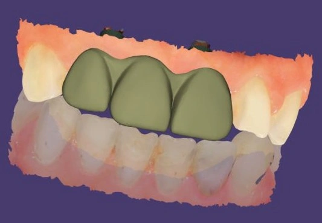
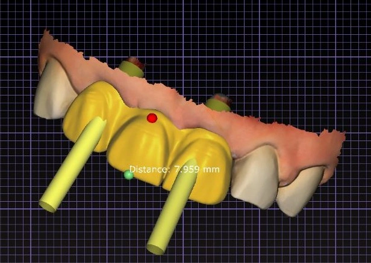

نسخه استخراجشده؛ ترجمه یا تأیید علمی انجام نشده است. وضعیت: captured
بیمار با نیاز به بریج قدامی شامل دو ایمپلنت و یک پونتیک مراجعه کرده است. دندان ۲ سمت چپ به دلیل بیرونزدگی، معیار قوس در نظر گرفته نشده است. پس از تحویل روکشهای موقت، بیمار میگوید دندانها بلند و خیلی بزرگاند. این جمله را چطور به تصمیم تبدیل میکنی؟

این جمله بهتنهایی هیچ اطلاعات قابل استفادهای نمیدهد؛ بیمار کل مجموعه را میبیند و نارضایتیاش را در یک عبارت کلی میگوید. باید آن را به اجزای قابل تصمیمگیری تجزیه کنی: لبهی اینسیزال، ناحیهی سرویکال، عرض تاج و فرم کلی. تا وقتی مشخص نشود بزرگی از کدام جزء میآید، هر اصلاحی حدس است.
با پرسش ناحیهبهناحیه معلوم شد خود بیمار موقعیت لبهی اینسیزال را مناسب میداند و آنچه بزرگ به نظرش میرسد از ناحیهی بالاتر، یعنی سرویکال، میآید.
این یک تصمیم مهم را از همان ابتدا قفل کرد: موقعیت لبهی اینسیزال دست نمیخورد و هر راهحلی باید بالای این خط طراحی شود. تحلیل شدید استخوان و سابقهی احتمالی دیاستم، فضای پروتزی را هم در بعد طولی و هم در بعد عرضی افزایش داده بود.
با ثابت بودن لبهی اینسیزال، تنها راه کم کردن طول، بالا آوردن طوق است؛ اما آنوقت طول سانترالها کم میشود و عرضشان ثابت میماند و نتیجه دندانهای پهن و مربعی است. چون با یک بریج یکپارچه کار میکنی، دستت برای دستکاری عرض دندانها هم باز نیست. یعنی هر دو راه اصلاح مستقیم ابعاد، پروپورشن را بدتر میکند.

روکشهای نهایی بر اساس همین طراحی ساخته و تحویل شد و بیمار آن را پذیرفت.
اگر باز هم پهن دیده شود، قدم بعدی باز کردن امبراژورهای اینسیزال با دیسک است که عرض قابل رؤیت تاج را کم میکند و دندان ظریفتر دیده میشود. در این کیس نیازی به آن نشد.